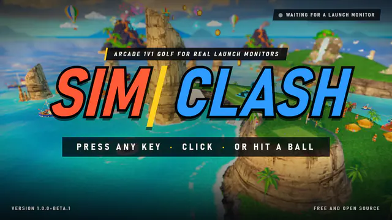
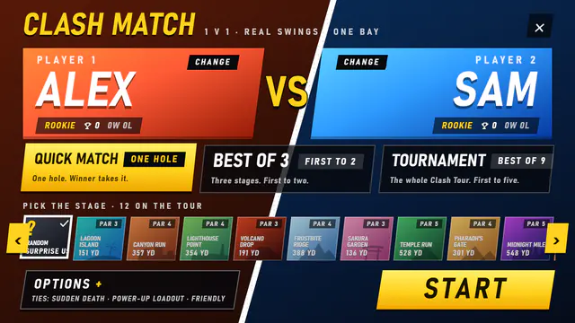
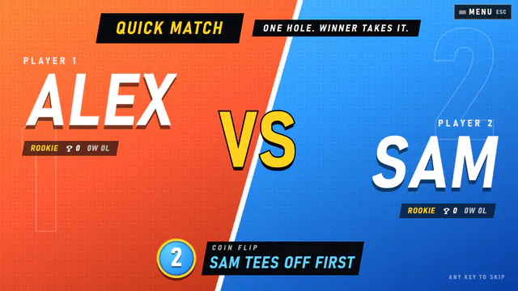
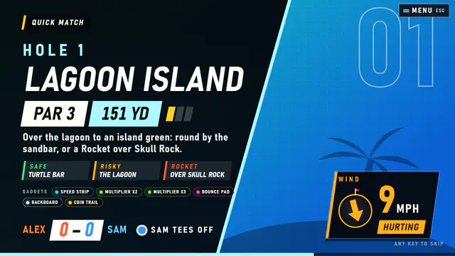
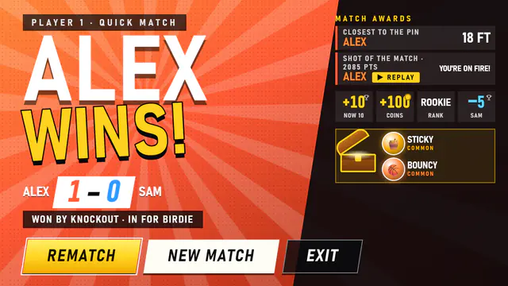
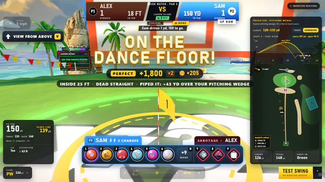
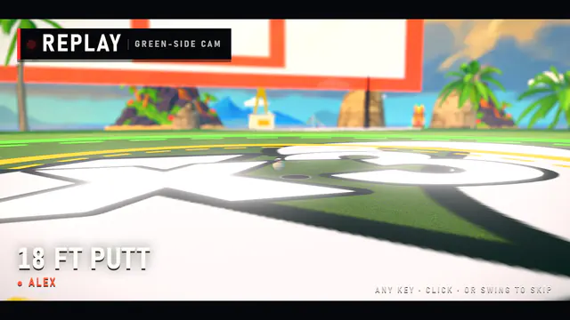
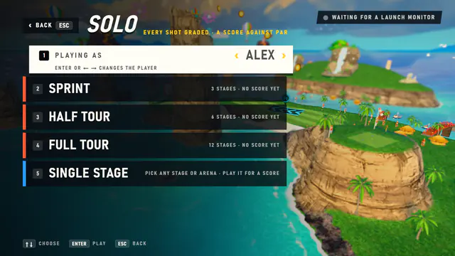
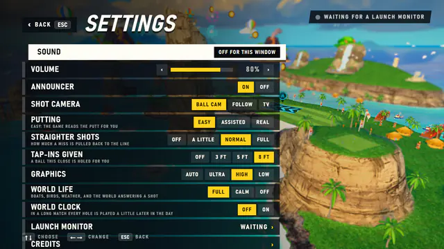
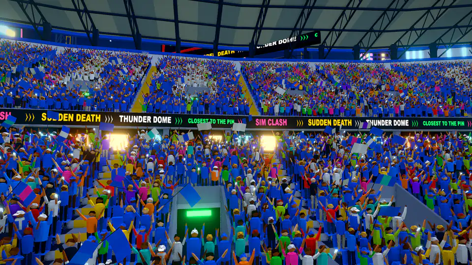

How to play
Two players. One bay.
You take turns at the same simulator. The game calls each player up, plays the shot you really hit, and ends every hole the moment it is decided. Here is everything it does.
Starting a match
Start the game. It opens on the title screen: press any key, click, or simply hit a ball.
Choose VERSUS on the main menu (two players; PARTY is the same for two to four). The menus work with the arrow keys and Enter, with the number keys, or with a mouse or touch screen; Esc goes back.
Pick the two players. Tap a player slot to choose a name or type a new one. The lobby opens with two players ready: Player 1 and Player 2 are made on the spot when the roster has fewer than two. Player one is always orange, player two always blue.
Pick a format, and for a quick match a stage (or leave it on Random). OPTIONS holds the rest: what happens on a tied hole (sudden death or halve), power-ups (loadout, unlimited or off), putting (easy, assisted or real), stage order (tour or shuffle), and whether a hazard loses the hole.
Press START. The VS screen flips a coin for who tees off, the stage introduces itself with its par, yards, wind and three routes, and the first player is called up. Any key or a click skips an intro.





Formats
| Format | Holes | Wins | Charges each |
|---|---|---|---|
| Quick match | One stage: your pick, or random | The hole | 2 |
| Best of 3 | Tour stages in order from the first, or shuffled | First to 2 | 3 |
| Tournament (best of 9) | The nine Clash Tour stages in order, or shuffled | First to 5 | 6 |
The match ends the moment it is won. The winner screen hands out the awards (longest drive, closest to the pin, shot of the match, most perfects), trophies, coins and a chest of balls, and offers REMATCH, NEW MATCH or EXIT.

Matches are friendly: there are no stakes. Trophies move you up the ranks (Rookie, Amateur, Pro, Expert, Master, Legend). None of it is real money and nothing can be bought.
The rules
Who plays
A coin decides the first tee. After that the winner of the last hole has the honour. Both players tee off, then whoever is farther from the hole plays. Once both balls are on the green, the player with fewer strokes putts first, which means the next putt is always for the win or to tie.

Knockout
The hole ends the moment a player can no longer tie it. If your opponent is in the cup with a score and you have already taken that many strokes, you have lost the hole on the spot. If you are exactly one stroke behind, you get one swing and it must drop.
What the swing is for
The header and the turn banner say what the next shot means: PUTT IN TO WIN, CHIP IN TO WIN, HOLE IT TO WIN, or the same TO TIE. The ball that wins a hole gets a FOR THE WIN! stamp. When the next hole can win the match, MATCH POINT is flashed.
Stroke cap
Par plus three. Reach it without holing out and you stop; your opponent wins the hole by holing out. If both players hit the cap, the hole is tied.
Tied hole: sudden death
A tied hole goes straight to an arena (Bullseye Bay, Thunder Dome or Ice Pick). One ball each, closest to the pin takes the hole. A ball in the water or out of bounds is a miss and loses to any ball on land. Both miss, or the two balls finish within a tenth of a foot of each other: go again. In the options you can choose to halve tied holes instead; then only a match that is level at the end goes to sudden death.
Putting is helped on purpose
Launch monitors read putts poorly, so the game helps, and how much is a setting. It solves the putt that goes in, so a putt needs pace more than line: you do not have to aim for the break.
| Level | A putt drops when | Where it is the default |
|---|---|---|
| Easy | it starts within 4.5 degrees of the line and its pace is 80 % to 160 % of the right one | Solo and practice (SETTINGS > PUTTING) |
| Assisted | within 2.5 degrees, pace 85 % to 140 % | A match (the lobby's OPTIONS) |
| Real | your own stroke, at the real cup |
A putt outside the window is a miss that finishes close, and a putt struck at three times the right pace never drops. Tap-ins given (off, 3, 5 or 8 feet; 8 by default) picks up a ball that close. On Assisted a must-make putt can be missed: an average putter holes about 4 in 10 from 30 feet.
Hazards and bad shots
Water or out of bounds costs a stroke and a drop, never a lost ball. (An option makes a hazard lose the hole outright, if you like it brutal.) Full shots get a little forgiveness too: your slice is still your slice, but smaller.
Conceding
Either player can concede at any time with the CONCEDE tab under the header. There are no mulligans in a match; use undo for a shot that should not have counted.
Balls and tricks
Each player starts a match with a loadout of charges: 2 in a quick match, 3 in a best of 3, 6 in a tournament. One charge buys any ball or trick, and each can be used once per match. (The options also offer unlimited power-ups, or none.)
- Arm a ball before you swing: 1 to 9 for the dock, Shift+1 to 9 for the next nine, B for the whole bag with what each one does. Arming is free until you swing, so change your mind as often as you like. The ball on the grass takes the armed ball's look.
- Cast a trick and it is spent at once: it sits on your opponent until their next swing, whenever that is.
- A shot hit with a power-up ball scores half points (a Gold ball: double), so the swing still has to be good.
The fifteen balls
-
Rocket epic
Strap a booster to it. A normal drive flies 500 yards.
-
Sticky common
Lands and stops dead. Where it carries is where it stays.
-
Magnet rare
The cup is three yards wide. Get it close and it drops.
-
Windcutter common
What wind? This ball never feels it.
-
Laser rare
Dead straight. 85 % of your slice, gone.
-
Moonball common
Into orbit, down like a feather.
-
Bouncy common
Rubber core. Hits the ground and keeps on going.
-
Fireball epic
Leaves hot and low, lands running. A hundred yards of roll.
-
Ghost rare
Trees? What trees. It flies straight through them.
-
Skipper common
Skips across water like a flat stone. Five hops to the far bank.
-
Yo-Yo rare
Lands, bites, and rips back twenty yards. Fly it past the pin.
-
Homing epic
Locks on to your line and bends back to it in the air.
-
Titan rare
A quarter more speed and it will not curve. At all.
-
Feather common
Floats for ever, comes down soft and stays where it lands.
-
Gold epic
A plain ball made of money: double points, double coins.
The three tricks
-
Gust common
A 25 mph crosswind hits their next shot. Left or right? Nobody knows.
-
Tiny Cup rare
Their cup shrinks to a quarter. Good luck holing that.
-
Fog common
Their yardages vanish. They swing blind.
Rocket holes
Sky Fortress (par 3, 427 yards, 50 m up), Dragon's Spine (par 4, 604 yards) and Summit Express (par 5, 700 yards, 70 m up) cannot be played with a plain ball. On these stages every player's tee shot is a free Rocket ball: no charge, and a ball you armed yourself is kept for a later shot. A Rocket turns a normal drive into roughly a 500-yard one.
Rocket holes come up in a quick match (pick one, or Random) and in a shuffled series. The Clash Tour proper is stages 1 to 9.

Wind
Every hole has a wind of its own, rolled when its stage comes up from that stage's own range: Sakura Garden is nearly calm at 0 to 7 mph, Lighthouse Point and Summit Express blow 10 to 22. It is the same for both players for the whole hole, and late holes in a series lean toward the top of the range. The stage intro shows it big, and a small badge stays in the header.
The Windcutter ball ignores the wind completely. The Gust trick adds a 25 mph crosswind to one shot on top of it. Auto aim (A) allows for the wind.
Grades and callouts
Every shot gets a grade, from DISASTER and MISS through OK, GOOD and GREAT to PERFECT and JACKPOT, and at most one callout: the single loudest thing to say about it. Good grades in a row build a streak that multiplies your points. A few of the thirty callouts:
| Callout | You get it for |
|---|---|
| HOLE IN ONE!!! | Holing a hole's first stroke. |
| PIN SEEKER! / DART! | A full shot that finishes inside 3 feet / inside 10 feet. |
| ON THE DANCE FLOOR! | Finding the green from over 100 yards. |
| ABSOLUTE BOMB! | A tee shot that carries 290 yards or more, or well past a typical drive with that club. |
| STRIPED IT! | A tee shot dead down the middle. |
| NICE SHOT! / GREAT SHOT! / PERFECT SHOT! | A good, great or perfect grade with nothing more special to shout. |
| SLICE HOUSE! / HOOK CITY! | A tee shot that curves more than 30 yards off line. |
| TERRIBLE! | Any other full swing that finishes more than 30 yards off line. |
| WORM BURNER! / SKY BALL! | A full swing that never gets off the ground / a tee shot popped straight up. |
| IN THE DRINK! / SEE YA! | Water / out of bounds. On the volcano stages the water is lava: MELTED! |
| ROBBED! / SO CLOSE! | A ball that rolls past the lip / a putt that stops within a foot. |
A shot blown off line by an opponent's Gust is never called TERRIBLE or SLICE HOUSE: you are graded on your swing, not on the sabotage.

Course gadgets
The stages have things on them that a real swing can hit. The stage intro lists the ones on that hole, and the lineup shows the ones ahead of you.
| Piece | What it does |
|---|---|
| Boost ring | A hoop in the air. A ball through it flies on faster. |
| Bounce pad | Throws a ball that lands or rolls on it back into the air. |
| Speed strip | Accelerates a rolling ball along its arrow. |
| Wind tunnel, geyser | Moving air that pushes a ball inside it; a vent that erupts on a cycle and throws a ball skyward. |
| Bumpers, rails, backboards | Pinball posts and low walls the ball kicks off; a board behind a green that kills its pace. |
| Funnel, ice, mud | A bowl that draws a rolling ball to its middle; ice that runs it on; mud that stops it dead. |
| Warp pipe, cannon | A ball into the mouth is fired out of the other end. |
| Breakables | Walls, crates, snowmen, a piñata. The number on a wall is the ball speed it takes to go through; a slower ball comes back off it. |
| Coins, multiplier rings | Coins hung along a line of flight; a ring on the ground that doubles or trebles the points of a shot that lands in it. |
They are the same for both players and never random. A putt is never touched by one. A boost does not flatter your grade: the distance score is what the same swing would have carried without it. A Ghost ball passes through anything solid and a Rocket smashes any breakable.

Party, Bullseye, Trick Shot Duel
Party (2 to 4 players)
Main menu, PARTY. Add up to four players, pick a format and how long (3, 6 or 9 holes):
- Skins. The lowest score alone takes the hole's skin; a tie carries it over to the next.
- Stroke race. Every stroke counts; lowest total wins. A player who reaches the stroke cap stops, and the hole counts one more.
- Elimination. The highest score on each hole is out. A tie for the highest goes to an arena, where the farthest ball goes.
The tee is played in the order of the last hole's scores, best first; after that whoever is farthest from the hole plays. Power-ups, tricks, undo and the stray-ball guard work as in a match.
Handicaps: HELP
In the Versus and Party lobbies each player has a HELP switch: 1 gives that player Easy putting and one more power-up charge, 2 adds a forward tee 20 % of the hole closer, 3 a forward tee 35 % closer and a second extra charge. The lobby suggests a level from the players' records; nothing is applied until you press it. Holes that are all carry have no forward tee.
Bullseye (1 to 4 players)
Main menu, BULLSEYE. Darts with a golf ball on an arena: every ball from the tee, scored by the ring it stops in (50 for the bullseye, down to 5 at the edge; water is a miss). High score is three, five or seven rounds of three balls, and scoring with every ball of a turn multiplies them (double, then treble). Countdown starts on 100, 200 or 300 and must finish on exactly zero. No power-up balls.
Trick Shot Duel (2 players)
Main menu, TRICK SHOT DUEL. The challenger hits any shot from the tee; the game calls what made it special (its carry, and the one or two things most its own: bend, how close, how high, a gadget). The other player gets one ball to match it or takes a letter. The roles swap every round. First to spell the word (CLASH, PIG or HORSE) loses. A ball in the water or a duff is no call.
Replays and highlights
A notable shot is shown again from another camera: a hole-out, a putt of 15 feet or more that drops, an epic callout, the ball that wins a hole, a sudden death or the match. In a match it plays by itself, once. In solo play it is offered: press P. Any key, a click or a swing skips it, and a real swing is always played at once.
HIGHLIGHTS on the main menu keeps the notable shots of the last match and the best of the night, to play back.

Solo and practice
Solo
One player, playing for a score against par. Pick who is playing, then a length: a Sprint of three stages, a Half tour of six, the Full tour, or any Single stage or arena. Every shot is graded just as in a match, the balls you earn with streaks and level-ups are yours to arm, and your best score at each length is kept, per player.
Strokes count as on a card. So that nobody is stuck on one hole for ever, a stage is picked up automatically at par plus six strokes (and then counts one more), or you can GIVE UP THIS STAGE from the pause menu (Esc), which costs the strokes so far plus one and never less than par plus four. There are no mulligans in a scored run.

Practice
No score and no pressure. Free play puts you on any stage and tees it up again when you finish. Closest to the pin is five balls at a par 3 or an arena, best one counts. The Putting challenge is nine putts from 3 to 40 feet, and Up and down is six chips from off the green.
Settings
SETTINGS on the main menu holds everything that changes how the game plays and sounds. The defaults are the arcade ones; turn them down for a sterner game.
| Setting | Choices | What it does |
|---|---|---|
| Sound, Volume, Announcer | On / off, 0 to 100 %, on / off | All the game's sound, how loud, and whether the announcer speaks. |
| Shot camera | Ball cam, Follow, TV | How a shot is filmed. See Camera and sound. |
| Putting | Easy, Assisted, Real | Easy: the game reads the putt for you. Real: your stroke, untouched. |
| Straighter shots | Off, A little, Normal, Full | How much a miss is pulled back toward the line. |
| Tap-ins given | Off, 3 ft, 5 ft, 8 ft | A ball this close is holed for you, for one stroke. |
| Graphics | Auto, Ultra, High, Low | Auto lowers the detail by itself to keep the frame rate. |
| World life | Full, Calm, Off | The boats, birds, weather and the world's reactions to a shot. Calm keeps the slow and the far; Off draws none of it. |
| World clock | Off, On | In a long match every hole is played a little later in the day. Off by default. |
| Launch monitor | Whether a launch monitor is connected and what the game listens for, the Foresight bridge's panel and switch, and SET UP MY LAUNCH MONITOR, which runs the connection wizard again. |

Keys
Everything can be done with a mouse or a touch screen. In a bay, a keyboard within reach is quicker.
| Key | What it does |
|---|---|
| ← → | Aim left and right (hold Shift for bigger steps) |
| A / 0 | Auto aim / aim straight at the pin |
| 1 to 9 | Arm a power-up ball from the dock (Shift for the next nine) |
| B | Open the ball bag, with what each ball does |
| R | Drop on the line (twice when it costs a stroke; once for a free drop) |
| T | Test swing: the list of swings, to play a shot without a launch monitor; 1 to 6 pick one while it is open |
| V | View from above (tap: up or back down; hold: a peek) |
| F | Fly over the hole, tee to green |
| D | Show or hide the shot data panels |
| P | Play the replay that is on offer (solo play) |
| S | Sound on / off |
| Esc | The match menu, or the pause menu in solo and practice; in the menus, one step back |
| M | The match menu (in a match); take the last shot back (in free play) |
| U / C | Undo / count a stray ball, while the prompt is up in a match |
| U | Unlimited balls on / off (outside a match) |
| F11 or Alt+Enter | Full screen on / off |
| Any key, or a click | Skip an intro screen |
Camera and sound
The shot camera is a setting with three choices:
- Ball cam (the default): flies behind the ball all the way, then eases in behind it at the green so you watch it arrive, and drop, with the cup ahead of it.
- Follow the ball: the simulator-style follow camera.
- TV: covers the shot from the tee and from the landing area.
Time slows only when the ball comes by the pin; the landing always plays at full speed. After a shot in a match the picture stays on that ball for two seconds (longer for an epic one) before it cuts to the next player.
S switches all the game's sound on or off, and it remembers; Settings has the volume and an announcer switch. Nothing loops and nothing counts down: there is no shot clock, and nobody is hurried over a real ball.
